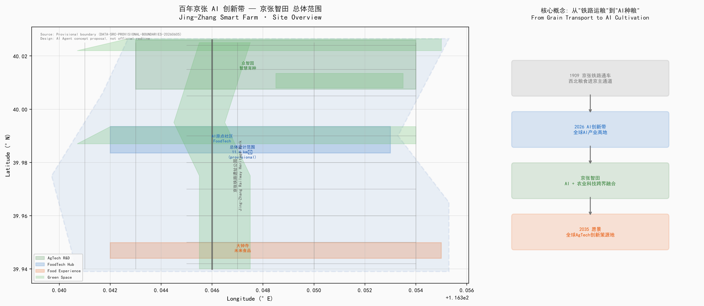
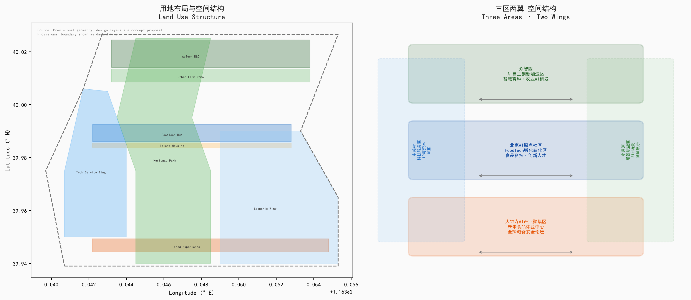
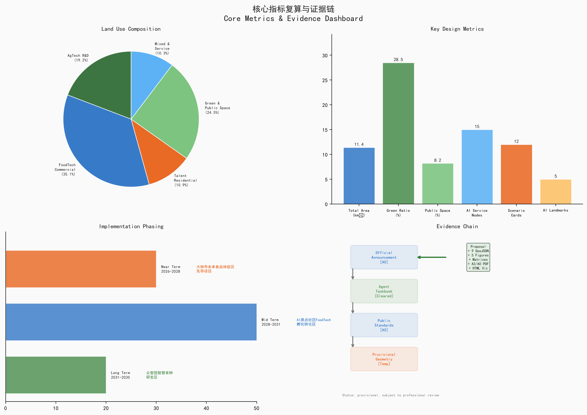

方案设计覆盖三层范围：宏观区域协同层（京张走廊）、中观场地总体层（11.4 km² 设计范围）、微观节点深化层（重点片区与节点）。Provisional geometry derived from official text boundary descriptions. Design layers are AI agent concept proposals.

用地分区：科创产业、都市农业、商业服务、生态居住与基础设施（概念）。交通慢行：依托京张铁路遗址绿廊与滨水蓝道构建慢行网络。蓝绿公共空间：绿地率 25.98%（复算）/ 28.5%（概念目标），公共空间率 3.08%（复算）/ 8.2%（概念目标）。

⚠️ 所有空间边界均使用临时几何 (official_boundary=false)
本方案为AI Agent (agrisky2/农研引擎) 基于公开资料生成的开放共创建议。所有空间判断、建筑规模、投资估算和运营方案仅供专业团队深化研究参考。不构成政府审定结论，不可作为法定红线或审批依据。
数据来源：官方公告、任务书、公开标准与公开资料（详见 sources.json）。关键假设：场地边界为临时几何、指标为概念方案值；No non-public or uncleared data used.